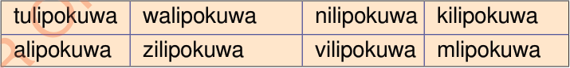

C.
Andika kinyume cha maneno yafuatayo:
Mfano: zuribaya
ujingawerevu
(i) usiku
(ii) zima
(iii) lala
(iv) furaha
(v) ingia
D.
Andika aya ifuatayo kwa usahihi kwa kuzingatia alama za uandishi.
paulina ni mwanafunzi wa shule ya msingi mpitimbi anapenda kusoma na marafiki zake mboni baraka na tumaini wakati wa kufunga shule alitangazwa kuwa mshindi wa kwanza katika darasa lao alishtuka na kusema aha nimewashinda wote ndoto ya paulina ni kusoma hadi chuo kikuu na kuwa rubani paulina ni mwanafunzi anayejitambua na mwenye kuweka malengo ya baadaye wewe je
E.
Kamilisha sentensi zifuatazo kwa kuchagua neno sahihi kutoka kwenye kisanduku

Mfano: Nilipokuwa mdogo nilikuwa mnene.
(i) nimelala niliota ndoto.
(ii) Baba anasoma, alidondosha miwani yake.
(iii) shuleni, mlifanya bidii katika masomo yenu.
(iv) Mkunazini, tulipiga picha za ukumbusho.